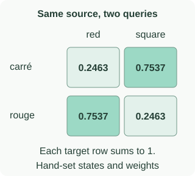

Neural Machine Translation by Jointly Learning to Align and Translate
The seq2seq companion passes a single source summary to a decoder. Attention gives the decoder a different interface: keep representations for source positions, then combine them using weights that can change with the decoder’s query.
This companion builds an original, deliberately tiny attention module for red square → carré rouge. Every vector and parameter is supplied below. It is an arithmetic lab, not a trained translator or reproduction of the paper. Familiarity with vectors, softmax, and the difference between a supplied and generated target prefix is enough.
Keep the source memory separate from the query
Imagine looking up a record in a two-row table. The rows remain available while your query changes. An attention read is softer: score each row, then take a weighted combination instead of retrieving one exact row.
red → h₁ = [1, 0]
square → h₂ = [0, 1]
Supplied query: s = [1, −1].
Memory and query are inputs to this read; no recurrent update is simulated.
red → e₁ = 0.4049
square → e₂ = 1.5232
These scores have not yet been normalized.
For carré: 0.2463 h₁ + 0.7537 h₂.
Result: c = [0.2463, 0.7537].
Our two-word vocabulary: carré or rouge.
The context weight on square and the probability of carré are different quantities.
A larger weight says that a vector contributes more strongly to this particular mixture. It does not turn a source token into an output word. Even here, we still need a separate output head to interpret the context.
Compute scores, weights, and context in that order
Let $h_j$ be source vector $j$, and $s$ the query. We use the additive form below, also implemented in the PyTorch attention tutorial. $W$ and $U$ project the two inputs into a common hidden space; $v$ reduces that space to a scalar score. Our toy sets both matrices to the 2×2 identity and $v=[2,2]$, with no biases.
The tanh acts coordinate by coordinate. For $s=[1,-1]$ and the red vector, add to obtain $[2,-1]$. Therefore $e_{\text{red}}=2\tanh(2)+2\tanh(-1)=0.4049$. For square, the sum is $[1,0]$ and $e_{\text{square}}=2\tanh(1)=1.5232$.
Exponentiating and normalizing those two scores gives weights [0.2463, 0.7537]. They are nonnegative and sum to one. In code, subtract the largest score before exponentiating: the common factor cancels, while the smaller exponentials reduce overflow risk. Scores themselves need not be nonnegative or sum to one.
The weighted sum is $0.2463[1,0]+0.7537[0,1]=[0.2463,0.7537]$. Its coordinates happen to equal the weights because we selected basis vectors. That equality does not hold for general annotations.
Context: [0.2463, 0.7537]
Output logits: [2.2610, 0.7390]
Output probabilities: carré 0.8208 · rouge 0.1792
Our two softmax operations normalize over different sets: source positions first, output vocabulary second. The first answers “how much of each source vector enters this read?” The second scores the words we permit the toy to output.
Read the rows of an alignment display

Normalize each target row over source columns. Do not normalize down the columns: a source position may be useful for several target positions. Nor must the strongest cell move monotonically from left to right. Our two-row example emphasizes square, then red.
The two supplied queries do not prove that a recurrent decoder could generate the phrase. We have not implemented state transitions, beginning/end tokens, a full vocabulary, or generation. Those interfaces belong in a complete translation model; the seq2seq companion makes the training/generation distinction explicit.
Padding must be excluded before normalization
Batching may add placeholder positions so examples share a rectangular shape. A placeholder is not another source word. The checkbox adds a deliberately bad padded annotation $h_{\text{pad}}=[1,1]$ without masking it. Its score is 1.9281 in either query, so it steals 0.5305 of the attention mass.
For the carré query, the real-word weights fall to [0.1157, 0.3539]. Adding the pad’s contribution produces context [0.6461, 0.8843], and the target-word probability falls from 0.8208 to 0.6714. A padding error can change predictions even though the real source and query have not changed.
This standalone function performs the masked read for aligned score, annotation, and validity arrays:
import math
def masked_read(scores, annotations, valid):
if not (len(scores) == len(annotations) == len(valid)):
raise ValueError("Arrays must describe the same positions")
if not any(valid):
raise ValueError("At least one real source position is required")
maximum = max(e for e, keep in zip(scores, valid) if keep)
mass = [math.exp(e - maximum) if keep else 0.0
for e, keep in zip(scores, valid)]
weights = [m / sum(mass) for m in mass]
context = [sum(a * h[k] for a, h in zip(weights, annotations))
for k in range(len(annotations[0]))]
return weights, context
weights, context = masked_read(
[0.4048668482, 1.5231883119, 1.9280551602],
[[1, 0], [0, 1], [1, 1]], [True, True, False])
print([round(a, 4) for a in weights]) # [0.2463, 0.7537, 0.0]Replacing the padded score with negative infinity makes its exponential zero and restores the original real-word weights. Merely setting its vector to zero is insufficient: an unmasked score can still consume probability mass and shrink the weighted sum. Masking target padding in the training objective is a separate operation from masking source padding in this read.
A translation error can update the attention scorer
For our first query, the target is carré and the chosen output head assigns it probability 0.820842. Its negative log probability is 0.197424. We can differentiate this scalar through the output head, context, source softmax, and additive score.
Write $d=\partial\ell/\partial c$ for the two-coordinate derivative arriving at the context. Differentiating our weighted sum and softmax gives:
In this lab, the two score derivatives are [+0.199562, −0.199562]. A small gradient-descent step on the scores would decrease red’s score and increase square’s. In an actual parameter update, the scores are not independent knobs: the same $W,U,v$ generate them all, so we accumulate their derivatives.
The standard-library reproduction script sums the objectives for both supplied queries, checks every one of the ten parameter derivatives with central finite differences, and takes one SGD step of size 0.1. It holds the source vectors, queries, and output head fixed. The summed objective falls from 0.394849 to 0.363389; the largest gradient-check discrepancy is below $2\times10^{-10}$.
This verifies the arithmetic of this module. It does not measure translation quality, show that learned alignments are unique, or establish a causal explanation for a model’s output. Inspect the context and downstream response alongside the weights.
Check your understanding: if both annotations were identical, could these weights change the context?
No. If both annotations equal $h$, then $c=(\alpha_1+\alpha_2)h=h$. Any normalized weighting gives the same context. In that case $h_j-c=0$, so the score derivatives above are zero for a downstream objective that depends only on this context. A visually different weighting need not imply a different prediction.
Read the experiment’s columns before its headline
Selected Table 1 BLEU scores for WMT’14 English→French:
| System | All sentences | No-UNK subset |
|---|---|---|
| RNNencdec-50 | 17.82 | 26.71 |
| RNNsearch-50 | 26.75 | 34.16 |
| RNNsearch-50 · longer training | 28.45 | 36.15 |
| Moses | 33.30 | 35.63 |
“50” denotes the training sentence-length limit. No-UNK excludes sentences with unknown words in source or reference; neural decoding there also forbids UNK. The longer-trained attention model exceeds Moses on that subset, but remains below it on the full set. These columns support different comparisons.
When comparing a new model, hold the test population and evaluation procedure fixed. Removing hard examples changes the question. Our tiny lab has no BLEU score and cannot reproduce any row in this table.
Reproduce, then extend one assumption
python3 blog/ml/recommended-papers/nlp/bahdanau_attention_demo.pyThe script writes the numeric trace and heatmap SVG. Try replacing both source vectors with the same vector, or adding a common constant to all valid scores. Predict which contexts and weights should change before running the calculation.
The next implementation step is a real encoder–decoder with a source mask, shifted target inputs, and an end marker. The PyTorch translation tutorial provides an executable recurrent attention model. Keep the original paper’s experiments separate from that tutorial and from this intentionally small lab.
For a different limitation, continue to subword segmentation: revisiting source positions does not itself create an output word absent from a fixed vocabulary.
References
- Bahdanau, Cho & Bengio: Neural Machine Translation by Jointly Learning to Align and Translate — §3, Appendix A, and Table 1.
- PyTorch: Translation with a Sequence to Sequence Network and Attention — additive score implementation and recurrent decoder plumbing.